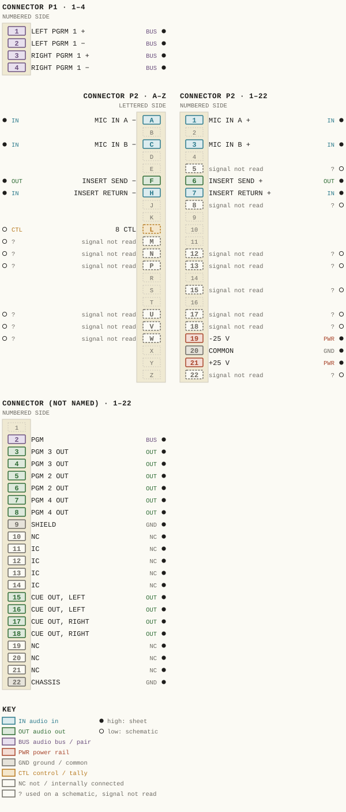
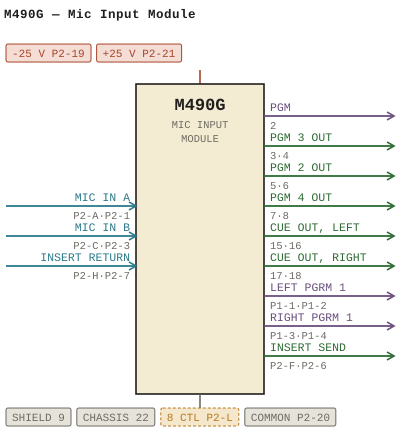

M490G — Mic Input Module
| Type | module |
| Category | INPUT-PRE-AMPS |
| Try it | simulator & front panel · download package (zip) |
| Earliest dated evidence | 1978|11 — estimate from a dated variant |
| Evidence | from M490 |
| Confidence | family |
| Variants | M490, M490A, M490B, M490C, M490D, M490E, M490F, M490H, M490J, M490K, M490L, M490M, M490N, M490T |
| Folder | Modules/INPUT-PRE-AMPS/M490G |
Connections and circuit (ideal SPICE model)
Drawn live from its RTO-144 connections: run the generator, turn the gain, watch the VU. Open the netlist to see how the model is built.
Pictures


M490G.pinout.svg

M490G.connections.svg 1978 - M490G - 490-01-008 - INPUT MODULE FUNCTIONAL DIAGRAM.jpg
1978 - M490G - 490-01-008 - INPUT MODULE FUNCTIONAL DIAGRAM.jpg 1978 - M490G - 490-01-008 - OFF ONISTART TIMER RESET OFF TALLY OFF ISTOP.jpg
1978 - M490G - 490-01-008 - OFF ONISTART TIMER RESET OFF TALLY OFF ISTOP.jpg 1978 - M490G - 490-02-008 - CAST COMPONENT DESIGNTIONS CRIC.jpg
1978 - M490G - 490-02-008 - CAST COMPONENT DESIGNTIONS CRIC.jpg 1978 - M490G - 490-02-008 - MIC INPUT MODULE.jpg
1978 - M490G - 490-02-008 - MIC INPUT MODULE.jpg 1978 - M490G - 490-04-015 - CUE OUT RIGHT OFF TALLY.jpg
1978 - M490G - 490-04-015 - CUE OUT RIGHT OFF TALLY.jpg 1978 - M490G - 490-04-015 - MIC INPUT MODULE.jpg
1978 - M490G - 490-04-015 - MIC INPUT MODULE.jpg 1978 - M490G - 490-04-016 - IGNA PURPOSES FROM REMOTE LOCAT ION RELATED.jpg
1978 - M490G - 490-04-016 - IGNA PURPOSES FROM REMOTE LOCAT ION RELATED.jpg 1978 - M490G - 490-04-016 - SWII WIL SWITCH CHE CUE CHANNE TERNATELY.jpg
1978 - M490G - 490-04-016 - SWII WIL SWITCH CHE CUE CHANNE TERNATELY.jpg 1978 - M490G - 490-06-018 - ISSUR CSUCDITF OCISION ADO.jpg
1978 - M490G - 490-06-018 - ISSUR CSUCDITF OCISION ADO.jpg 1978 - M490G - 490-06-018.jpg
1978 - M490G - 490-06-018.jpg 1978 - M490G - P001 - Title Page.jpg
1978 - M490G - P001 - Title Page.jpg 1978 - M490G - P002.jpg
1978 - M490G - P002.jpg 1978 - M490G - P003 - 1-1.jpg
1978 - M490G - P003 - 1-1.jpg 1978 - M490G - P004 - 1-2.jpg
1978 - M490G - P004 - 1-2.jpg 1978 - M490G - P005 - 2-1.jpg
1978 - M490G - P005 - 2-1.jpg 1978 - M490G - P006 - 2-2.jpg
1978 - M490G - P006 - 2-2.jpg 1978 - M490G - P007 - 2-3.jpg
1978 - M490G - P007 - 2-3.jpg 1978 - M490G - P008 - 2-4.jpg
1978 - M490G - P008 - 2-4.jpg 1978 - M490G - P009 - 2-5.jpg
1978 - M490G - P009 - 2-5.jpg 1978 - M490G - P010 - 3-1.jpg
1978 - M490G - P010 - 3-1.jpg 1978 - M490G - P011 - 3-2.jpg
1978 - M490G - P011 - 3-2.jpg 1978 - M490G - P012 - 3-3.jpg
1978 - M490G - P012 - 3-3.jpg 1978 - M490G - P013 - 3-4.jpg
1978 - M490G - P013 - 3-4.jpg 1978 - M490G - P014 - 3-5.jpg
1978 - M490G - P014 - 3-5.jpg 1978 - M490G - P015 - 3-6.jpg
1978 - M490G - P015 - 3-6.jpg 1978 - M490G - P016 - 3-7.jpg
1978 - M490G - P016 - 3-7.jpg 1978 - M490G - P017 - 3-8.jpg
1978 - M490G - P017 - 3-8.jpg 1978 - M490G - P018 - 3-9.jpg
1978 - M490G - P018 - 3-9.jpg 1978 - M490G - P019 - CD4016.jpg
1978 - M490G - P019 - CD4016.jpg 1978 - M490G - P020 - 74C76.jpg
1978 - M490G - P020 - 74C76.jpg 1978 - M490G - P021 - 74C221.jpg
1978 - M490G - P021 - 74C221.jpgPrice history
| Year | Kind | Price | Listed as | Effective | Source |
|---|---|---|---|---|---|
| 2005|38 | used market value | 100.00 | M490G Mic Input | wbsps - website ARCHIVE/WBSPS 2008/ARCHIVE/old website/PriceGuide.htm | |
| 2006|39 | used market value | 100.00 | M490G Mic Input | wbsps - website ARCHIVE/WBSPS 2008/ARCHIVE/jan 2006 shell/priceguide.htm |
Pinout & connections
Each contact as its own documents name it: 37 named (36 high, 1 low confidence). An empty slot is a contact no page names. Hover a contact for its source; the table under the drawing lists them.
pinout (SVG) · connections (SVG) · pins (JSON)
Pin evidence — 51 contacts
| Pin | Signal | Kind | Confidence | Read from | Source |
|---|---|---|---|---|---|
| 2 | PGM | audio bus / pair | high | table | 1978 - M490G - Mic Input Module (2).pdf, p. 30 |
| 3 | PGM 3 OUT | audio out | high | table | 1978 - M490G - Mic Input Module (2).pdf, p. 30 |
| 4 | PGM 3 OUT | audio out | high | table | 1978 - M490G - Mic Input Module (2).pdf, p. 30 |
| 5 | PGM 2 OUT | audio out | high | table | 1978 - M490G - Mic Input Module (2).pdf, p. 30 |
| 6 | PGM 2 OUT also: BALANCED PREAMPLIFIER… (prose); BALANCED PREAMPLIFIER… (prose); BALANCED PREAMPLIFIER… (prose); BALANCED PREAMPLIFIER… (prose) | audio out | high | table | 1978 - M490G - Mic Input Module (2).pdf, p. 30 |
| 7 | PGM 4 OUT | audio out | high | table | 1978 - M490G - Mic Input Module (2).pdf, p. 30 |
| 8 | PGM 4 OUT | audio out | high | table | 1978 - M490G - Mic Input Module (2).pdf, p. 30 |
| 9 | SHIELD | ground / common | high | table | 1978 - M490G - Mic Input Module (2).pdf, p. 30 |
| 10 | NC | not / internally connected | high | table | 1978 - M490G - Mic Input Module (2).pdf, p. 30 |
| 11 | IC | not / internally connected | high | table | 1978 - M490G - Mic Input Module (2).pdf, p. 30 |
| 12 | IC | not / internally connected | high | table | 1978 - M490G - Mic Input Module (2).pdf, p. 30 |
| 13 | IC | not / internally connected | high | table | 1978 - M490G - Mic Input Module (2).pdf, p. 30 |
| 14 | IC | not / internally connected | high | table | 1978 - M490G - Mic Input Module (2).pdf, p. 30 |
| 15 | CUE OUT, LEFT | audio out | high | table | 1978 - M490G - Mic Input Module (2).pdf, p. 30 |
| 16 | CUE OUT, LEFT | audio out | high | table | 1978 - M490G - Mic Input Module (2).pdf, p. 30 |
| 17 | CUE OUT, RIGHT | audio out | high | table | 1978 - M490G - Mic Input Module (2).pdf, p. 30 |
| 18 | CUE OUT, RIGHT | audio out | high | table | 1978 - M490G - Mic Input Module (2).pdf, p. 30 |
| 19 | NC | not / internally connected | high | table | 1978 - M490G - Mic Input Module (2).pdf, p. 30 |
| 20 | NC | not / internally connected | high | table | 1978 - M490G - Mic Input Module (2).pdf, p. 30 |
| 21 | NC | not / internally connected | high | table | 1978 - M490G - Mic Input Module (2).pdf, p. 30 |
| 22 | CHASSIS | ground / common | high | table | 1978 - M490G - Mic Input Module (2).pdf, p. 30 |
| P1-1 | LEFT PGRM 1 | audio bus / pair | high | rto-144 | M490G.rto144.json, p. 1 |
| P1-2 | LEFT PGRM 1 | audio bus / pair | high | rto-144 | M490G.rto144.json, p. 1 |
| P1-3 | RIGHT PGRM 1 | audio bus / pair | high | rto-144 | M490G.rto144.json, p. 1 |
| P1-4 | RIGHT PGRM 1 | audio bus / pair | high | rto-144 | M490G.rto144.json, p. 1 |
| P2-A | MIC IN A | audio in | high | rto-144 | M490G.rto144.json, p. 1 |
| P2-1 | MIC IN A also: MIC B (schematic) | audio in | high | rto-144 | M490G.rto144.json, p. 1 |
| P2-C | MIC IN B also: CTL (schematic) | audio in | high | rto-144 | M490G.rto144.json, p. 1 |
| P2-3 | MIC IN B also: INPUT (schematic) | audio in | high | rto-144 | M490G.rto144.json, p. 1 |
| P2-5 | — | used on a schematic, signal not read | low | schematic | 1978 - M490G - 490-02-008 - CAST COMPONENT DE…, p. 1 “NSERTS R2l 4 > ez0/0 22 / 2 & P2-8 P2- 5 P2.7” |
| P2-F | INSERT SEND | audio out | high | rto-144 | M490G.rto144.json, p. 1 |
| P2-6 | INSERT SEND | audio out | high | rto-144 | M490G.rto144.json, p. 1 |
| P2-H | INSERT RETURN | audio in | high | rto-144 | M490G.rto144.json, p. 1 |
| P2-7 | INSERT RETURN | audio in | high | rto-144 | M490G.rto144.json, p. 1 |
| P2-8 | — | used on a schematic, signal not read | low | schematic | 1978 - M490G - 490-02-008 - CAST COMPONENT DE…, p. 1 “NSERTS R2l 4 > ez0/0 22 / 2 & P2-8 P2- 5 P2.7” |
| P2-L | 8 CTL | control / tally | low | schematic | 1978 - M490G - 490-02-008 - CAST COMPONENT DE…, p. 1 “8 CTL P2 -L” |
| P2-M | — | used on a schematic, signal not read | low | schematic | 1978 - M490G - 490-02-008 - CAST COMPONENT DE…, p. 1 “Pz-M” |
| P2-N | — | used on a schematic, signal not read | low | schematic | 1978 - M490G - 490-02-008 - CAST COMPONENT DE…, p. 1 “Ext Ch P2-N ON” |
| P2-12 | — | used on a schematic, signal not read | low | schematic | 1978 - M490G - 490-02-008 - CAST COMPONENT DE…, p. 1 “Pz - 12” |
| P2-P | — | used on a schematic, signal not read | low | schematic | 1978 - M490G - 490-02-008 - MIC INPUT MODULE.…, p. 1 “P2-P Ch B Ou” |
| P2-13 | — | used on a schematic, signal not read | low | schematic | 1978 - M490G - 490-02-008 - CAST COMPONENT DE…, p. 1 “P2-13,w” |
| P2-15 | — | used on a schematic, signal not read | low | schematic | 1978 - M490G - 490-02-008 - CAST COMPONENT DE…, p. 1 “P2 -15” |
| P2-U | — | used on a schematic, signal not read | low | schematic | 1978 - M490G - 490-02-008 - CAST COMPONENT DE…, p. 1 “P2-U” |
| P2-17 | — | used on a schematic, signal not read | low | schematic | 1978 - M490G - 490-02-008 - CAST COMPONENT DE…, p. 1 “P2 - 17” |
| P2-V | — | used on a schematic, signal not read | low | schematic | 1978 - M490G - 490-02-008 - CAST COMPONENT DE…, p. 1 “P2 -V” |
| P2-18 | — | used on a schematic, signal not read | low | schematic | 1978 - M490G - 490-02-008 - CAST COMPONENT DE…, p. 1 “P2-18” |
| P2-W | — | used on a schematic, signal not read | low | schematic | 1978 - M490G - Mic Input Module (2).pdf, p. 26 “P2 - W! <E-----:” |
| P2-19 | -25 V | power rail | high | rto-144 | M490G.rto144.json, p. 1 |
| P2-20 | COMMON also: COMMON (rto-144) | ground / common | high | rto-144 | M490G.rto144.json, p. 1 |
| P2-21 | +25 V | power rail | high | rto-144 | M490G.rto144.json, p. 1 |
| P2-22 | — | used on a schematic, signal not read | low | schematic | 1978 - M490G - 490-02-008 - MIC INPUT MODULE.…, p. 1 “CRZi Ctl 0 >P2 -22,2 comm 1n4063” |
Physical manual inventory
| Item | Location | Status | Scanned |
|---|---|---|---|
| M490G - Mic Input Module | DUPLICATE | SCANNED BUT NEEDS STICHING | |
| M490G - Mic Input Module | PDF - Already scanned | ||
| M490G - Mic Input Module | Recently scanned and stiched by WB |
Documents (2)
| Year | File | |
|---|---|---|
| 1978|11 | 1978 - M490G - Mic Input Module (2).pdf | note |
| 1978|11 | 1978 - M490G - Mic Input Module.pdf | note |
Photos & scans (31)


Parts list — board M490G (10 parts)
From 1978 - M490G - P013 - 3-4.jpg, page 1 (scanned); also in timelines/data/bom.csv.
| Ref | Part | Value | Manufacturer | Mfr part no. |
|---|---|---|---|---|
| R6 | Resistor 1/4w5% Philips | 2.2 | ||
| R7 | delete | |||
| R8 | delete | |||
| R9 | Resistor 1/4w59 | 220k | ||
| R25 | Trim Pot Piher PTIOh (2.5) Sk | 5k | ||
| R26 | Resistor /4w 5% Philips | 22 | ||
| M490G | MIC INPUT MODULE | |||
| R113 | Resistor 1/4w 57 Philips | 10K | ||
| R118 | delete | |||
| R119 | Resistor 1/4w 5% | 15k |
Named in other drawings & documents (1)
| File | Page |
|---|---|
| 19xx - RTO-144 - Module RTO-144 Jumper calculator.xlsx | 1 |
From the manuals
Each manual split into its sections. Text that is the same in many Ward-Beck manuals (warranty, address, standard notes) is kept once on the Boilerplate page and linked.
General description (2)
Description — 253 words · 1978 - M490G - P006 - 2-2.jpg, page 1
M49OG MTC INPUT_MODULE Program Channe Switch 22 cMOS analog switch, serving as the active Sw i tching element the PROGRAM channel The control voltage operate 22 derived from the Iogic circuitry within the module and coupled Z2 via CRI To switch the channel ON _ this control voltage the order +10 volts When the control voltage drops volts the switch will be OFF resulting signa attenuation more than 100 dB _ Booster Amplifiec Following 22 , integrated circuits 23 and amplify the audio signal nomina level dBm equivalent voltage) From the amplifier output the signal routed the PROGRAM ASSIGN switches SwL SWS , SW13, SW14 followed by the mixing bus outputs Program Qutputs Four PROGRAM outputs P1 , P2, P3 P4 are designed feed into four mixing buses Operation ASSIGNMENT SWiTCHES Sw4 SW5, SW13 SWI4 resuit the assignment the PROGRAM the appropriate mixing buses.
Cue Channel The CUE signal orin ginates from bridging takeoff the input the slide ttenuator _ Owing the high input impedance the CUE channel its operation has no effect on the main PROGRAM channel 25 represents the audio switch for the CUE channel Similarly 22 , the control voltage for 25 generated the logic circuitry Js described further on .
The output 25 followed by the booster amplifier 26 which turn feeds the cue bus mixing network ROI through R104 Control ogic The control voltages required operate the PROGRAM switch 22 and the CUE switch 25 are generated with the aid logic circuitry utilizing integrated circuits 27 through 21o
- source: 1978 - M490G - P006 - 2-2.jpg, p. 1
Description — 130 words · 1978 - M490G - P009 - 2-5.jpg, page 1
M49OG Mic INPUT_MQDULE The output produced pin 21o will always pe negative going pulse pproximately 500 milliseconds duration. CRI2 passes this pulse 28, pin thereby "clearing" the B-section the flip-flop and resulting pin 28 switch (or remain at) volts turn Sw tching the CUE switcn 25 OFF AI Tog" con trol inputs are buffered and switch bounce guard against spurious noise Power Supely_Decoueling Power supply decoupling provided by R146 R149 and C5o to C53_ CRI6 and CRI?
serve prevent amplifier damage the event supply voltage reversai The decoupling network crops the +/-25 volt supply rails nominal voltage +/-18 volts 015 decouples and filters the positive suppiy rail= resulting an output +12 volts operate the CMOS circuitry_ ddition, 23 and are further decoup ed by R54, R55, C21 and C22 2-5
- source: 1978 - M490G - P009 - 2-5.jpg, p. 1
Drawings (14)
Each scan with its trace laid over it: the slider runs from the scan to the vector drawing. Click one to see it large and save it as SVG, DXF, KiCad, PDF or PowerPoint.
Input Module Functional Diagramviewer
Off Onistart Timer Reset Off Tally Off Istopviewer
Cast Component Designtions Cricviewer
Mic Input Moduleviewer
Issur Csucditf Ocision Adoviewer
1978 - M490G - 490-06-018viewer
Cue Out Right Off Tallyviewer
Mic Input Module Connector Rear Viewviewer
Igna Purposes From Remote Locat Ion Relatedviewer
Swii Wil Switch Che Cue Channe Ternatelyviewer
Read from the drawing title blocks.
| Drawing | Title | Date | Drawn by | Checked by | Iss. | Source |
|---|---|---|---|---|---|---|
| 490-01-008 | Off Onistart Timer Reset Off Tally Off Istop | file | ||||
| 490-01-008 | Input Module Functional Diagram | PA | MIC | 3 | file | |
| 490-01-008 | Mic Input Module Functional Diagram | PA | 1 | file p.25 | ||
| 490-01-008 | Mic Input Module Functional Diagram | PA | FC | file p.25 | ||
| 490-02-008 | Cast Component Designtions Cric | file | ||||
| 490-02-008 | Mic Input Module | file | ||||
| 490-04-015 | Cue Out Right Off Tally | file | ||||
| 490-04-015 | Mic Input Module | 3 | file | |||
| 490-04-015 | Input Module | PA | TR | 1 | file p.31 | |
| 490-04-015 | Mic Input Module Connector Rear View | PA | file p.31 | |||
| 490-04-016 | Igna Purposes From Remote Locat Ion Related | B | file | |||
| 490-04-016 | Swii Wil Switch Che Cue Channe Ternately | file | ||||
| 490-06-018 | Issur Csucditf Ocision Ado | MIC | file | |||
| 490-06-018 | file |